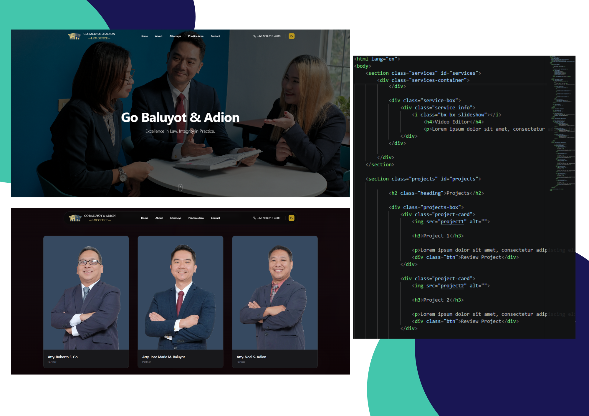
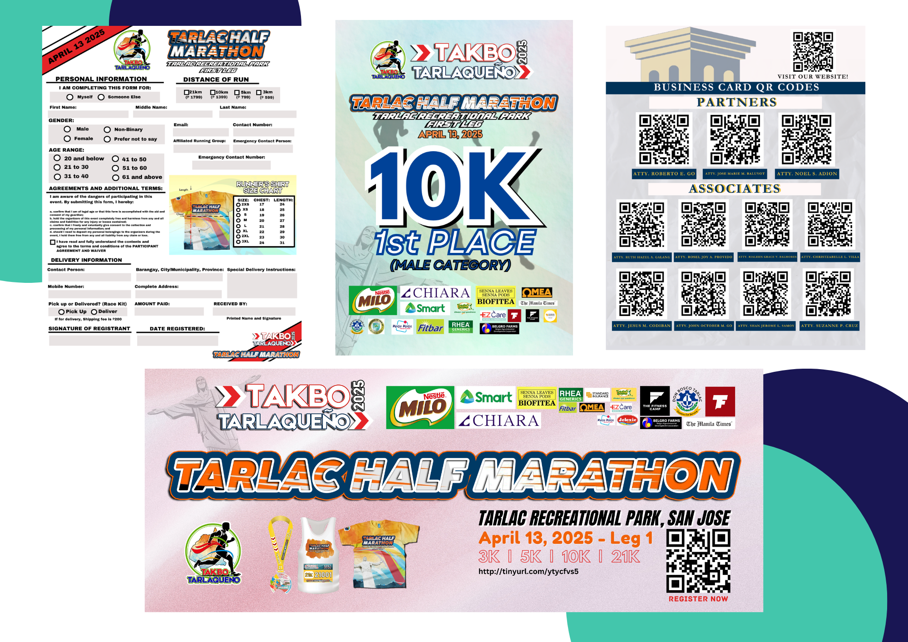
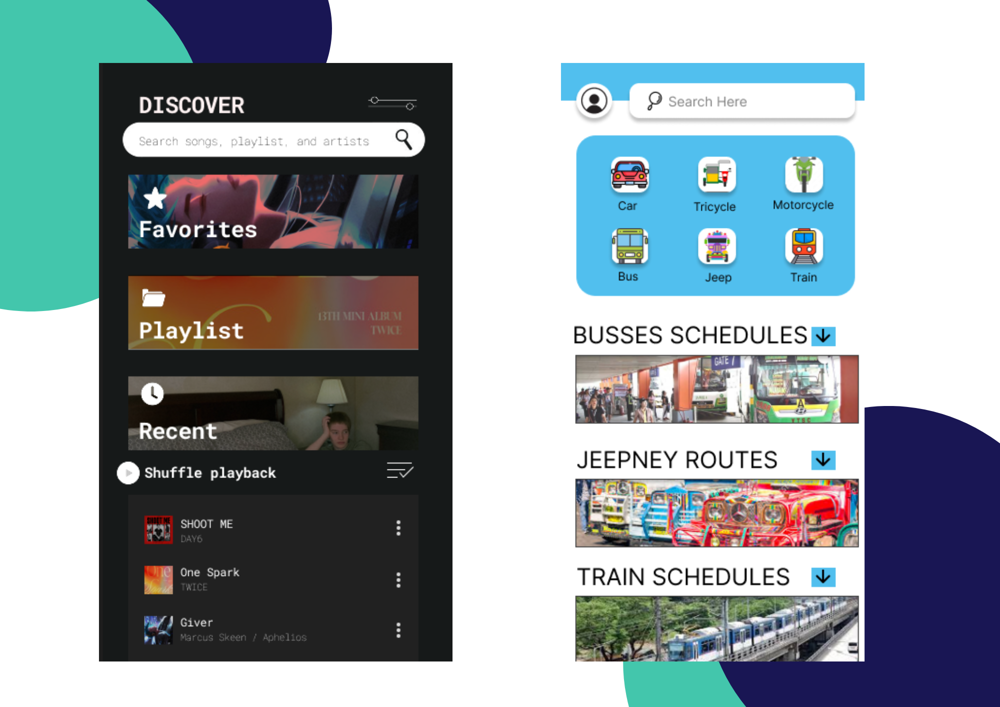

Projects

Project 1
On my first project at my internship, me and my collegues developed a website for the company we applied for. We gathered information about them and what they service for.
After gathering data, we started with the base design and kept asking for one of the partner's thoughts on the design of the website until they were pleased with the result of what we presented them with. You can still visit the website as it is still up by clicking the "Review Project"

Project 2
These projects are from the internship as well, I have made posters and graphics for them, they had an event for a fun run and they asked for a design and asked me to use their premium canva account so I can work properly and produce the designs they were seeking.
Another other grahic that I made is the QR Codes for their busniness cards, I had to get all of their business cards as a soft copy and made the image into a QR Code. Click below to see my work on my Canva.

Project 3
My third projects were projects for my college to make a UI and UX design to our liking by using Figma.
The first one I made was a Music Player that was based on my old music player but I elevated the look and tried to make it look more easy to digest and use.
The second project is one of the projects I thought about doing, it is a commuter's guide app for people who are starting to understand commuting and for travelers who don't know how or where the busses or jeepneys go in different cities, I also have the options to book a car, trycicle, and motorcycle above, as well as the schedules of the busses and the trains, and the routes of the jeepneys. To see my UI Projects, please click the button below.

Project 4
Lastly, my Video Editing projects are all of my own works and were all done mostly in a day by collecting a lot of photos and clips to edit them fully.
I am mostly self taught in editing, but I have gathered a lot of my inspirations from the videos I watched online. Most of my edits are for my own but I have edited videos for friends as well.
As you can see, I can edit on my phone efficiently, but I can also do that on the PC as well. I mostly use Capcut, but with practice, I can also learn how to edit with other apps if given the chance to.
To check my edits, please press the button below!